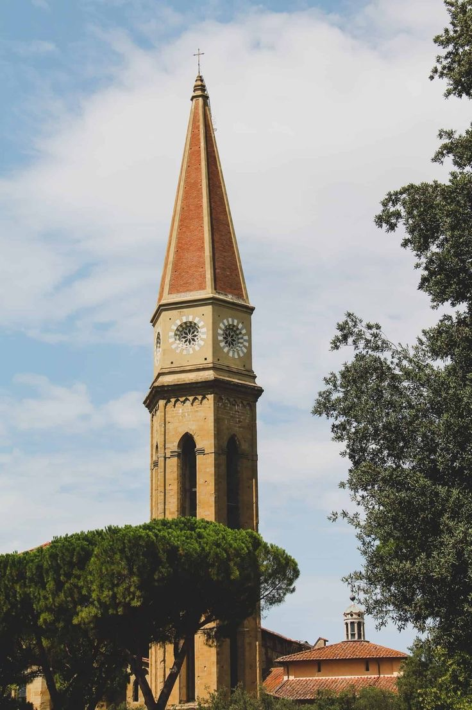
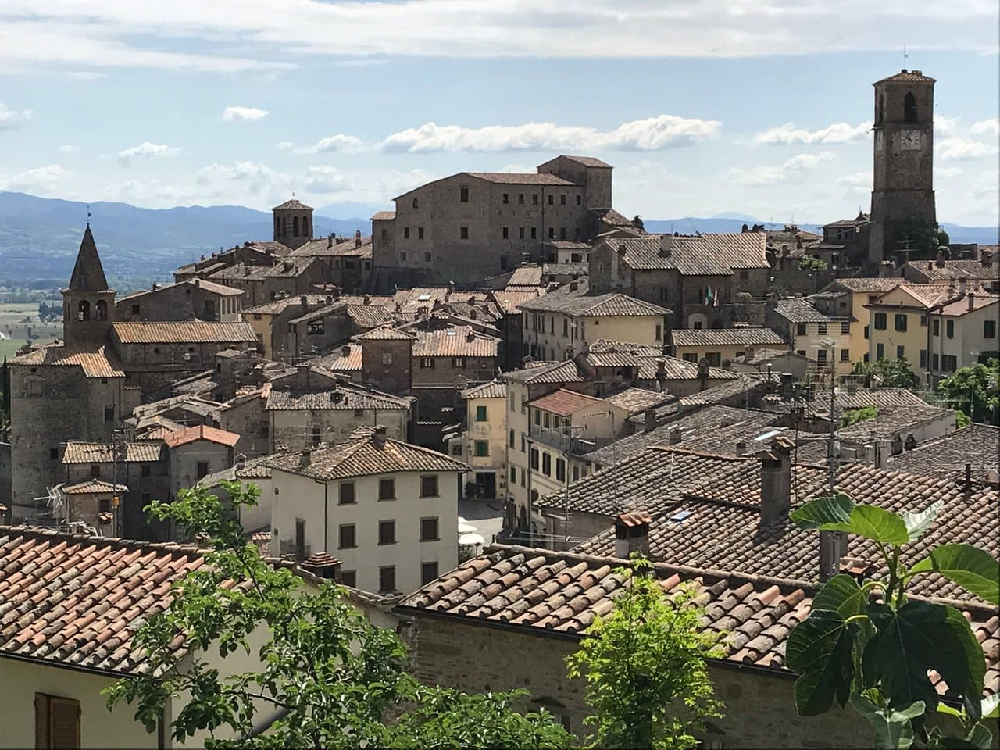
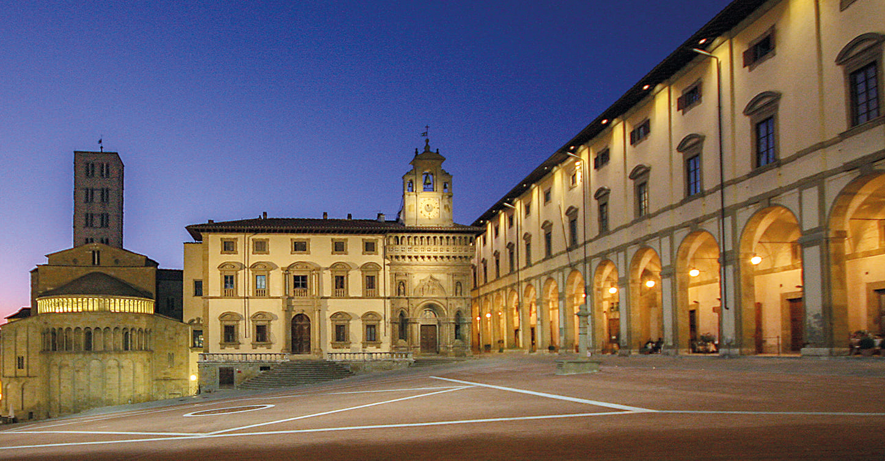
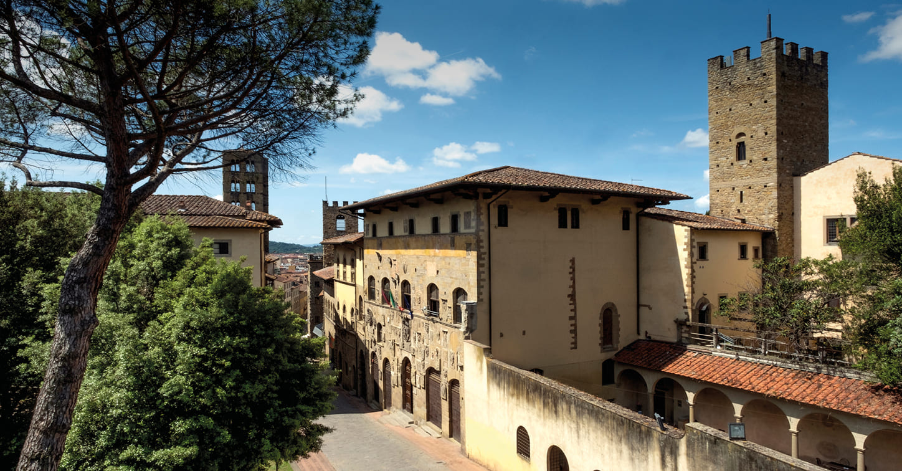
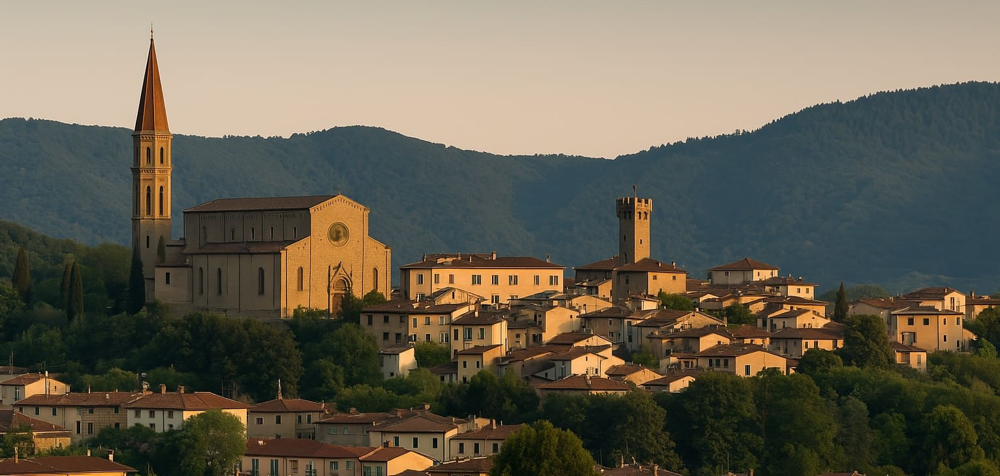

Arezzo to ukryty skarb Toskanii, znany z zamiłowania do piękna i antyków. Największym magnesem jest Bazylika San Francesco, która wewnątrz swojej kaplicy skrywa cykl fresków Piera della Francesca „Legenda o Krzyżu Świętym”. Te obrazy zachwycają precyzją geometryczną i niesamowitą grą światła, uchodząc za jedno z najważniejszych dokonań renesansu wewnątrz włoskich świątyń.
Spacerując po pochyłym Piazza Grande, możecie wyobrazić sobie sceny z filmu „Życie jest piękne”, który był tu kręcony. Wewnątrz otaczających plac loggi zaprojektowanych przez Vasariego znajdziecie liczne antykwariaty, w których można odkryć unikalne przedmioty z duszą, będące świadectwem bogatej rzemieślniczej przeszłości miasta.
Fortezza Medicea dominuje nad miastem, oferując rozległe tereny spacerowe. Wewnątrz jej potężnych bastionów odkryjecie stanowiska archeologiczne oraz pięknie zrewitalizowane ścieżki, z których rozciąga się widok na całą dolinę Casentino. To idealne miejsce, by poczuć obronny charakter dawnego Arezzo, będąc jednocześnie wewnątrz zielonej oazy spokoju.
Warto również zajrzeć do Casa Vasari. Wewnątrz dawnego domu słynnego biografa artystów możecie podziwiać ściany i sufity osobiście przez niego udekorowane. To intymne spotkanie z twórcą, który zdefiniował historię sztuki, pozwalające zobaczyć, jak wielcy mistrzowie projektowali przestrzeń życiową wewnątrz swoich prywatnych rezydencji.





Czas przejścia: 47 min (3.3 km)